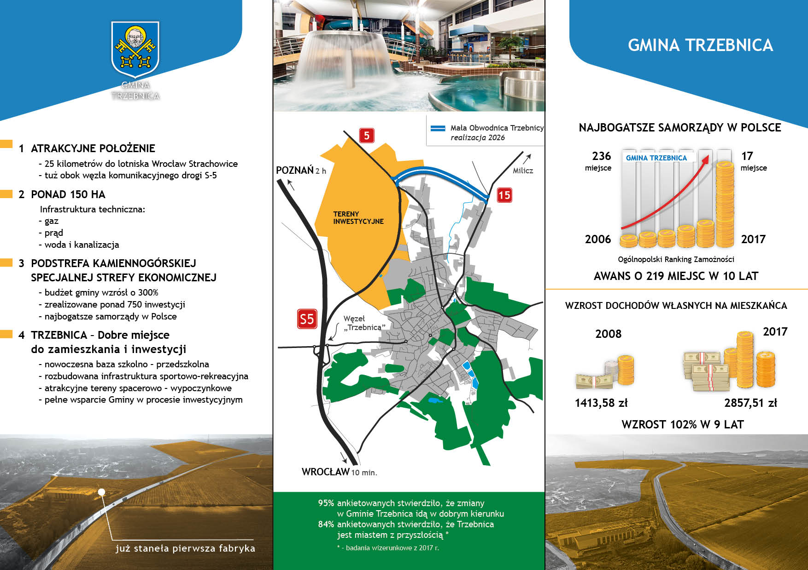

Gmina Trzebnica, którą od 2006 roku mam zaszczyt zarządzać jako burmistrz, rozwija się niezwykle dynamicznie. Liczne projekty i przedsięwzięcia realizujemy dbając o dziedzictwo i tradycję jednocześnie uwzględniając nowoczesne trendy i rozwiązania. Tę ideę obrazuje nasze hasło promocyjne – Trzebnica. Bogactwo historii, potencjał przyszłości.
Z dumą mogę pochwalić się licznymi ambitnymi i odważnymi inwestycjami zrealizowanymi w ostatnich latach – Gminny Park Wodny TRZEBNICA-ZDRÓJ z kręgielnią i strefą aktywności sportowej, Gminne Centrum Medyczne TRZEBNICA-ZDRÓJ, Gminny Obiekt Sportowy, Gminne Centrum Kultury i Sportu z Kinem Polonia 3D, zrewitalizowane tereny Stawów Trzebnickich i Lasu Bukowego, rewitalizacja Winnej Góry, Szkoła Muzyczna I stopnia im. prof. Edmunda Kajdasza, Trzebnicki Stadion Miejski FAIR PLAY ARENA, Szkoła Podstawowa nr 1 i 2, Szkoła Podstawowa w Kuźniczysku i Ujeźdźcu Wielkim, Gminny Żłobek i Przedszkole im. Krasnala Hałabały, deptak i rynek, zrewitalizowane tereny parków miejskich, nowe place zabaw, świetlice wiejskie, boiska wielofunkcyjne, pumptrack, ronda, drogi, chodniki.
Prężnie rozwijające się miasto, ale i cała gmina, na którą składa się aż 41 sołectw, są dla mnie powodem do dumy. Gmina Trzebnica jest idealnym miejscem do życia, zarówno dla rodzin z dziećmi, jak i seniorów. Świetnie zlokalizowana, posiadająca wygodny dojazd do Wrocławia (droga ekspresowa, szynobus), zapewnia dostęp do instytucji i usług, z tradycjami uzdrowiskowymi, z ogromnym dziedzictwem kulturowym, walorami rekreacyjnymi, bogatą ofertą edukacyjną, sportową, kulturalną oraz zdrowotną.
Na terenie Gminy Trzebnica wydzieliliśmy obszar ponad 150 ha terenów inwestycyjnych pod Specjalną Strefę Ekonomiczną w Trzebnicy, która stanowi podstrefę Kamiennogórskiej Specjalnej Strefy Ekonomicznej.
Zapraszam wszystkie firmy zainteresowane rozwojem swojej działalności do Gminy Trzebnica.
Serdecznie zapraszam do Trzebnicy!
Charakterystyka Gminy
Gmina Trzebnica to przestrzeń wielowymiarowa. Malowniczo położona wśród wzgórz. Mająca bogatą historię. Bardzo dobrze skomunikowana. Odważna i ambitna. Idealna dla rodzin. O dużym potencjale dalszego dynamicznego rozwoju. Oferująca liczne aktywności i możliwości. Trzebnica to miasto, w którym dobrze się żyje. Na miejscu znajdują się liczne instytucje, usługi oraz atrakcje i zabytki. Ponadto nowoczesna baza edukacyjna, rekreacyjna i sportowa. Te atuty przyciągają nowych mieszkańców naszej gminy. Gmina wiejsko-miejska z dużym znaczeniem rolnictwa oraz sadownictwa. Posiadająca na swoim terenie kilka dużych, rozpoznawalnych firm, jak Tarczyński S.A., Perfand, Panda, Sady Trzebnickie.
Gmina Trzebnica położona jest w północno‐wschodniej części województwa dolnośląskiego. Graniczy ona: od wschodu z gminą Zawonia; od zachodu z gminami: Oborniki Śląskie, Prusice; od północy z gminami: Milicz, Żmigród; od południa z gminami: Długołęka, Wisznia Mała. Północ Gminy Trzebnica tworzy Kotlina Żmigrodzka, a południe – Wzgórza Trzebnickie.
Trzebnica znajduje się zaledwie 20 km na północ od Wrocławia, z którym łączy ją droga ekspresowa S5. W stolicy Dolnego Śląska zlokalizowane jest najbliższe lotnisko.
Rolniczo-sadowniczy charakter gminy jest uzupełniany w ostatnich latach przez liczne inwestycje, wykorzystujące potencjał gminy i jej mieszkańców. Atrakcyjne ukształtowanie terenu gminy oraz liczne walory turystyczne wpływają na rozwój sportu i rekreacji, jak i różnych form turystyki.
W okolicach Trzebnicy występuje łagodny, umiarkowanie ciepły i wilgotny klimat. Ważną cechą klimatu trzebnickiego jest jego duża zmienność i aktywność atmosferyczna, szczególnie w okresie zimowym poprzez spore skoki ciśnienia atmosferycznego, wahania temperatury oraz zmienność wilgotności powietrza.
Potwierdzone zostały parametry bioklimatyczne spełniające normy klimatyczne oraz parametry sanitarne powietrza, które w całości odpowiadają normom zastosowanym dla uzdrowisk. Klimat Trzebnicy ma właściwości lecznicze i profilaktyczne w odniesieniu do chorób układu krążenia, narządów ruchu, stanów pourazowych i zaburzeń przemiany materii, a dodatkowo poprzez zróżnicowane bodźce klimatyczne i terenowe może wspomagać leczenie zaburzeń układu termoregulacyjnego.
Gmina w liczbach
Liczba ludności Gminy Trzebnica – 23 470
Liczba ludności miasto Trzebnica – 12 606
Liczba ludności sołectwa – 10 864
Powierzchnia Gminy Trzebnica - 200,2 km²
Gęstość zaludnienia na 1 km² - 122
Przyrost naturalny – 1
Stopa bezrobocia – 2,6
Kobiety na 100 mężczyzn – 107
Dochody budżetu gminy na 1 mieszkańca – 5235 zł
Wydatki budżetu gminy na 1 mieszkańca – 5237 zł
Mieszkania oddane na 10 tys. ludności – 60
Podmioty gospodarki narodowej w rejestrze REGON na 10 tys. ludności w wieku produkcyjnym – 2171
Podmioty gospodarki narodowej w rejestrze REGON ogółem – 3172
w sektorze rolniczym – 45
w sektorze przemysłowym – 270
w sektorze budowlanym – 480
Żłobki, oddziały żłobkowe – 7
Placówki wychowania przedszkolnego – 13
Dzieci w placówkach wychowania przedszkolnego – 1047, w tym w przedszkolach – 716
Szkoły Podstawowe – 10
Uczniowie szkół podstawowych – 2424
Czytelnicy w bibliotekach publicznych – 1925
Wypożyczenia księgozbioru na 1 czytelnika – 24
Dane Głównego Urzędu Statystycznego (2019r.)
Walory turystyczne
Trzebnica położona jest w północnej części Dolnego Śląska, w pasie Wzgórz Trzebnickich. Bliska odległość od stolicy Dolnego Śląska – Wrocławia – oraz walory przyrodnicze, turystyczne i historyczne stanowią ciekawą alternatywę na spędzenie czasu z dala od wielkomiejskiego zgiełku. Bogata historia, ciekawe miejsca spacerowo-wypoczynkowe oraz nowoczesne obiekty do uprawiania czynnej rekreacji pokazują ogromny potencjał kulturowy i krajobrazowy Trzebnicy. Urok tego miejsca podkreślają dodatkowo malownicze wzgórza otaczające miasto, rozległe sady oraz Las Bukowy i przyległe stawy trzebnickie (tereny przedwojennego uzdrowiska). Niezapomnianym miejscem czynnego wypoczynku dla całych rodzin jest nowoczesny Gminny Park Wodny TRZEBNICA-ZDRÓJ. Sercem miasta jest uroczy, zmodernizowany trzebnicki rynek. W Trzebnicy znajduje się także należący do największych obiektów klasztornych w Europie Środkowej pocysterski klasztor Sióstr Boromeuszek z przylegającą do niego bazyliką będącą Międzynarodowym Sanktuarium św. Jadwigi Śląskiej. Na pozytywny wizerunek Trzebnicy wpływają także liczne parki miejskie z odnowionymi fontannami, alejki spacerowe, place zabaw oraz ścieżki rowerowe. Więcej informacji na naszej stronie WWW.
Główne atuty
Bliskość Wrocławia zapewnia dostęp do szerokiej i bogatej oferty firm konsultingowych, rekrutacyjnych, doradczych, wyspecjalizowanych kancelarii prawnych oraz ośrodków akademickich i think tanków, co zapewnia dopływ wykwalifikowanej i wykształconej kadry.
W Trzebnicy znajdują się także kancelarie prawne i notarialne. Jak również baza gastronomiczna i noclegowa w atrakcyjnych hotelach, wyposażonych w sale konferencyjne.
Lokalizacja – tuż przy stolicy Dolnego Śląska, przy trasie ekspresowej S5, blisko granicy z Czechami oraz Niemcami. Więcej o charakterystyce gminy przeczytasz tutaj
Zachęty inwestycyjne – zwolnienia podatkowe o których więcej przeczytasz tutaj.
Klimat dla biznesu – współpraca z Urzędem Miejskim na każdym etapie procesu inwestycyjnego, nastawienie na
Zaplecze kapitału ludzkiego.
Sektory wysokiej szansy
Informatyczny IT – ICT szczególnie ze względu na to, że we Wrocławiu jest sporo firm działających w tej branży, jest zaplecze w postaci wyższych uczelni kształcących na kierunkach związanych z ICT. Swoją siedzibę ma m.in. IBM. Bardzo prężnie działa IT Corner – stowarzyszenie małych i średnich firm IT.
Spożywczy (przetwórstwo owocowo – warzywne) – wynika to ze specyfiki otoczenia Trzebnicy jako dolnośląskiego centrum sadów.
Medyczny – może też warto zapisać – w oparciu o doświadczenia Centrum Replantacji i zaplecze w postaci Uniwersytetu Medycznego we Wrocławiu.
Strefa inewstycyjna
Obszar inwestycyjny Specjalnej Strefy Ekonomicznej Trzebnica zalicza się do Kamiennogórskiej Specjalnej Strefy Ekonomicznej Małej Przedsiębiorczości z siedzibą w Kamiennej Górze.
150 hektarów zlokalizowane jest w bezpośrednim sąsiedztwie węzła komunikacyjnego z drogą szybkiego ruchu S-5 oraz wzdłuż planowanej Małej Obwodnicy Trzebnicy w trasie Wrocław – Milicz.

Trzebniccy przedsiębiorcy
Trzebnica od zawsze była miejscem atrakcyjnym dla przedsiębiorców. Poniżej przedstawiamy największych z nich.
Ulgi podatkowe dla Inwestorów
Przedsiębiorca inwestujący na terenie Specjalnej Strefy Ekonomicznej Trzebnica nabywa prawo do korzystania z pomocy publicznej w formie zwolnienia podatkowego.
Pułapy pomocy określone stosuje się w odniesieniu do całkowitej kwoty pomocy ze środków publicznych dla projektu objętego pomocą, niezależnie od tego, czy pomoc pochodzi ze źródeł lokalnych, regionalnych, krajowych czy wspólnotowych.
Jeśli firma planuje w najbliższym czasie budowę hali produkcyjnej, zakup nowej maszyny, linii technologicznej, dywersyfikację lub zwiększenie mocy produkcyjnych to przy spełnieniu określonych kryteriów, może się ubiegać o decyzję o wsparciu, a co za tym idzie pomoc publiczną.
Otrzymanie decyzji o wsparciu jest jednoznaczne z otrzymaniem pomocy publicznej w formie zwolnienia z podatku dochodowego od osób prawnych lub osób fizycznych. Pula zwolnienia zależy od wielkości przedsiębiorstwa i lokalizacji przedsięwzięcia. Dla województwa dolnośląskiego duży przedsiębiorca może odzyskać 25%, średni 35%, a mały i mikro 45% nakładów (kosztów kwalifikowanych), w postaci zwolnienia z podatku dochodowego.
Aktualnie, żeby otrzymać decyzję o wsparciu należy spełnić kryteria jakościowe i ilościowe. Kryteria ilościowe to minimalny poziom nakładów inwestycyjnych, który zależy od wielkości przedsiębiorstwa oraz od stopy bezrobocia w powiecie.
Więcej informacji pod linkem:
ssemp.pl
Kontakt
Paweł Siciński
Główny Specjalista ds. Rozwoju Gminy Chief Specialist. Municipality Development
 Gmina Trzebnica, którą od 2006 roku mam zaszczyt zarządzać jako burmistrz, rozwija się niezwykle dynamicznie. Liczne projekty i przedsięwzięcia realizujemy dbając o dziedzictwo i tradycję jednocześnie uwzględniając nowoczesne trendy i rozwiązania. Tę ideę obrazuje nasze hasło promocyjne – Trzebnica. Bogactwo historii, potencjał przyszłości.
Gmina Trzebnica, którą od 2006 roku mam zaszczyt zarządzać jako burmistrz, rozwija się niezwykle dynamicznie. Liczne projekty i przedsięwzięcia realizujemy dbając o dziedzictwo i tradycję jednocześnie uwzględniając nowoczesne trendy i rozwiązania. Tę ideę obrazuje nasze hasło promocyjne – Trzebnica. Bogactwo historii, potencjał przyszłości.
.jpeg)
.jpg)